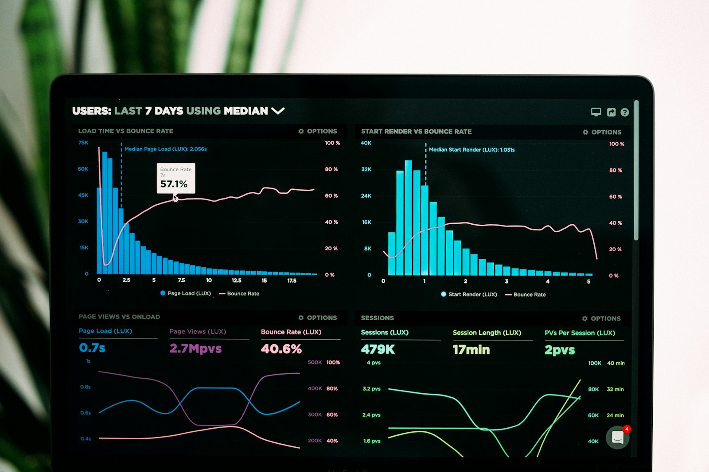

Neue Kunden, aktuelle Nachweise, weniger Routinearbeit. Aus Paderborn.
Wir bauen Software, die neue Kunden findet, Nachweise aktuell hält und Routinearbeit erledigt.
Kluger Systeme ist ein KI-Startup aus Paderborn. Unsere Systeme passen sich an Ihre Abläufe an, arbeiten mit Ihren Daten und laufen auf Wunsch komplett in Ihrem Haus.
Für kleine und mittlere Unternehmen im DACH-Raum, vom Produktionsbetrieb über Handel und Dienstleistung bis zur Kanzlei.
Das Kerngeschäft läuft. Drumherum stapelt sich die Arbeit.
Jede Woche geht Zeit verloren. Nicht bei der eigentlichen Arbeit, sondern bei allem, was nebenher erledigt werden muss.
Auf Empfehlungen und neue Anfragen hoffenVertrieb
Kundenfragebögen von Hand ausfüllenCompliance
Neue Vorgaben und Fristen zusammensuchenVerwaltung
Belegen und Unterlagen hinterhertelefonierenBuchhaltung
Dieselben Daten in drei Systeme tippenInnendienst
Drei Felder. Jedes läuft für sich.
Die meisten Kunden starten mit dem Thema, das gerade am meisten drückt. Das System wächst danach mit.

Neukundengewinnung
Neukundengewinnung
Planbare Neukunden statt Zufallstreffer.
Mit KI-gestützter Recherche finden wir Unternehmen, die zu Ihrem Angebot passen. Die Entscheider sprechen wir gezielt an, in der Sprache Ihrer Kunden. Sie führen nur noch die Gespräche.
Datenschutz-Dokumentation, Kundenfragebögen, Audits nach ISO, Nachweise für Auftraggeber, Banken und Versicherer. Wir bauen Ihre Unterlagen einmal sauber auf und automatisieren, dass sie aktuell bleiben. Die Freigabe bleibt bei Ihnen.
Fragebögen aus einer gepflegten Quelle beantwortet
Belege erfassen und zuordnen, Anfragen vorsortieren, Angebote vorbereiten, Daten zwischen Systemen übertragen. Wir finden die Abläufe, die heute am meisten Zeit kosten, und automatisieren sie mit KI.
Vorab berechnet, wie viel Zeit sich sparen lässt
Wiederkehrende Aufgaben automatisch erledigt
Auf Wunsch bleiben Ihre Daten in Ihrem Haus
Für Geschäftsführung, Verwaltung und Fachabteilungen
Ihr Unternehmen hat sein Wissen über Jahre aufgebaut. Unsere Systeme lernen daraus.
Und machen es nutzbar für Vertrieb, Verwaltung und Fachabteilungen. Auf Wunsch mit lokal betriebenen Modellen, dann verlassen Ihre Daten das Haus nicht.
Erst verstehen, dann automatisieren.
Entschieden wird erst, wenn Sie wissen, was sich lohnt und was es kostet.
Erstgespräch
Dreißig Minuten. Wo verliert Ihr Unternehmen heute am meisten Zeit oder Aufträge?
Analyse
Wir sehen uns den Ablauf genau an und zeigen, was sich wirklich lohnt. Mit Preis und Startdatum.
Umsetzung
Wir bauen und betreiben das System, mit möglichst wenig Aufwand für Ihre IT.
Übergabe
Ihr Team steuert das System selbst. Wir bleiben auf Wunsch an Bord.
Christoph Kluger, Gründer
Entstanden in der Praxis. Gebaut als Technologie.
Die Idee entstand in vielen Gesprächen mit Geschäftsführern, Vertriebs- und Qualitätsleitern. Im Produktionsbetrieb, im Handel und in der Kanzlei tauchten immer dieselben Engpässe auf: gute Leute, die ihre Zeit mit Recherche, Formularen und der Suche nach Wissen verbringen, das nur ein Kollege im Haus kennt.
Wir lösen das nicht mit Beratern, sondern mit Software. Als Startup sind wir schnell und vom ersten Gespräch bis zur Übergabe direkt erreichbar.
Ihre Frage ist nicht dabei? Schreiben Sie an kontakt@kluger-systeme.de oder sprechen Sie direkt mit Christoph Kluger.
Was heißt KI-Startup bei Ihnen konkret?
Wir sind ein junges Unternehmen und entwickeln KI-Systeme für den Mittelstand. Für Sie heißt das kurze Wege und Systeme, die auf Ihre Abläufe zugeschnitten sind, statt Standardsoftware von der Stange.
Für welche Unternehmen sind Ihre Leistungen gedacht?
Für kleine und mittlere Unternehmen in Deutschland, Österreich und der Schweiz, vom Produktionsbetrieb über Handel und Dienstleistung bis zur Steuerkanzlei.
Müssen wir alle drei Felder buchen?
Nein. Jedes Feld funktioniert für sich. Die meisten Kunden starten mit dem Thema, das gerade am meisten drückt, und erweitern später.
Wo bleiben unsere Daten?
Bei der Prozessautomatisierung setzen wir auf Wunsch auf lokal betriebene KI-Modelle. Ihre Daten verlassen dann Ihr Haus nicht.
Ersetzen Sie Steuerberater, Zertifizierer oder Rechtsberater?
Nein. Wir automatisieren Vorarbeiten wie Belegerfassung, Dokumentation und Antworten auf Fragebögen. Steuer- und Rechtsberatung, fachliche Freigabe und Zertifizierung bleiben bei Ihnen und den zuständigen Fachleuten.
Wie geht es nach dem Erstgespräch weiter?
Wenn es passt, folgt eine kurze Analyse Ihres Ablaufs. Danach wissen Sie, was sich lohnt, was es kostet und wann wir starten können. Erst dann entscheiden Sie.
Was kostet die Zusammenarbeit?
Das hängt von Feld und Umfang ab. Den Preis besprechen wir nach der Analyse, bevor irgendetwas beginnt.
Wo soll Ihr System als Erstes arbeiten?
In dreißig Minuten klären wir, wo in Ihrem Unternehmen der größte Hebel liegt und ob wir der richtige Partner dafür sind. Unverbindlich, per Video oder Telefon.